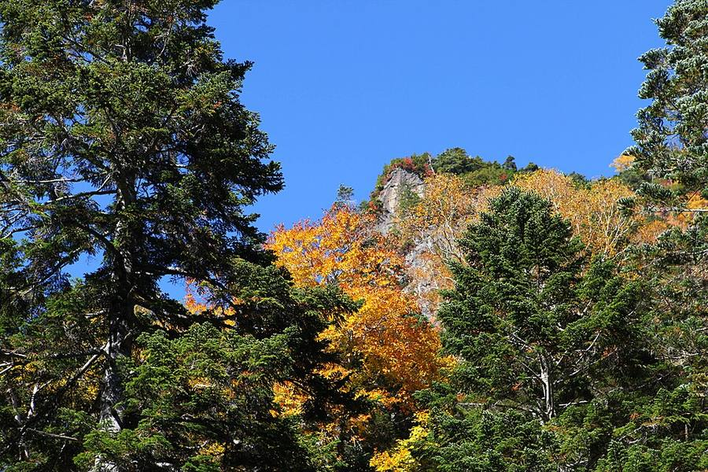
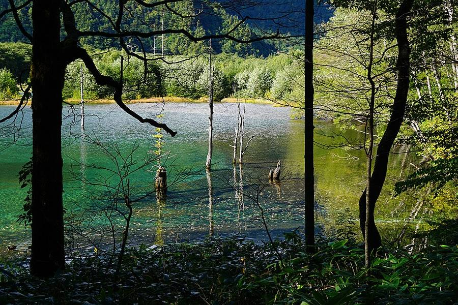
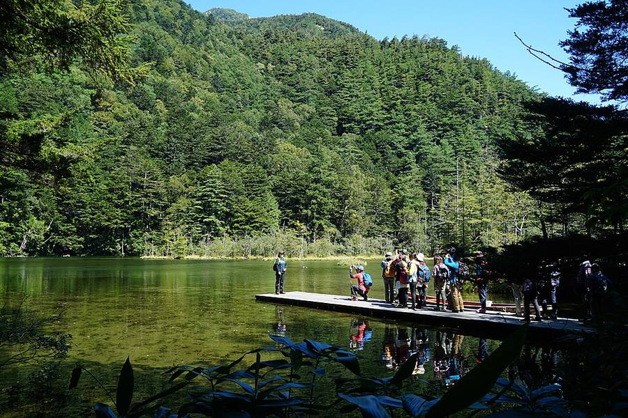
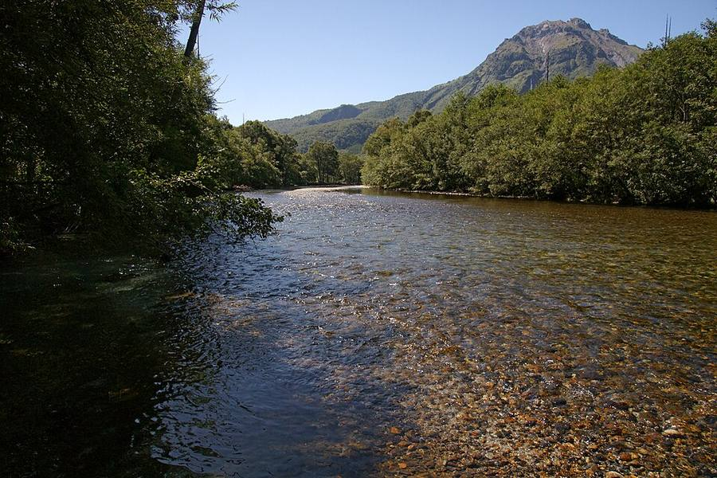
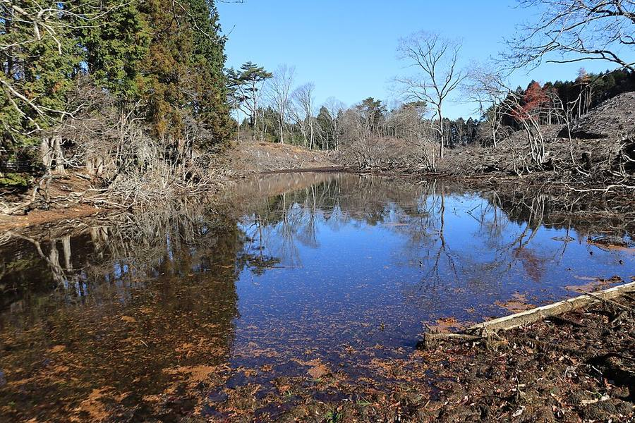

Kamikochi
Горная долина на 1 500 м в Северных Альпах. Сейчас здесь начинается пик листвы
Листва сейчас (Weathernews, Kappa-bashi): 11.10 окрашено около 50%. Пик с ~14.10, листья начнут опадать с ~30.10. Самые людные дни по прогнозу обзоров - вс 18.10 и 24-25.10, лучше ехать в будний день.

_24_Oct,_2011_-_panoramio.jpg){kind=link}


.jpg){kind=link}

.jpg){kind=link}














Что это за место
- Плато длиной 15 км вдоль реки Azusa, около 1 500 м над морем. Вокруг пики, самый высокий Okuhotakadake (3 190 м).
- Частные машины сюда не пускают, только автобусы и такси, поэтому тихо.
- Сезон 17.04-15.11, зимой всё закрыто. Здесь на 5-10° холоднее, чем в Matsumoto.
- Прогноз: пт 16.10 +16/+2, сб 17.10 +16/+5, сухо. Брать тёплую куртку.
Прогулка (всё по ровной тропе)
Taisho-ike
Пруд образовался в 1915 году, когда извержение вулкана Yakedake перегородило реку. В воде стоят сухие стволы. Удобно выйти из автобуса здесь и идти к Kappa-bashi.
Kappa-bashi
Подвесной мост в центре долины, рядом автобусный терминал. Классический вид на пики Hotaka.
Болото Dakesawa и памятник Weston
5-10 минут от Kappa-bashi. Памятник англичанину Уолтеру Уэстону, который сделал эти горы популярными у альпинистов.
Как добраться
- Из Takayama: автобус до Hirayu Onsen 60 мин (1 600 ¥) + автобус до Kamikochi 25 мин (1 500 ¥). У Nohi Bus есть билет туда-обратно на 7 дней за 5 800 ¥.
- Из Matsumoto: поезд до Shin-Shimashima 30 мин + автобус 60 мин (3 100 ¥).
- Как день из Takayama: чемодан остаётся в отеле.
Срез 12.10.2026, 10:00-12:00 по Токио. Погода: прогноз Open-Meteo на 12.10. Листва: Weathernews, визит-центр Nikko Yumoto, официальный сайт Tateyama Kurobe Alpine Route. Вулканы: Японское метеоагентство (JMA), префектура Kanagawa. Часы и цены: официальные сайты и japan-guide.com. Переезды: japan-guide, ekitan, Rome2Rio, обзоры. Фото: Wikimedia Commons (автор и лицензия под каждым), визит-центр Nikko Yumoto. Карта: Esri. Отели не проверялись и не бронировались.